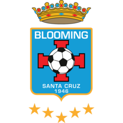
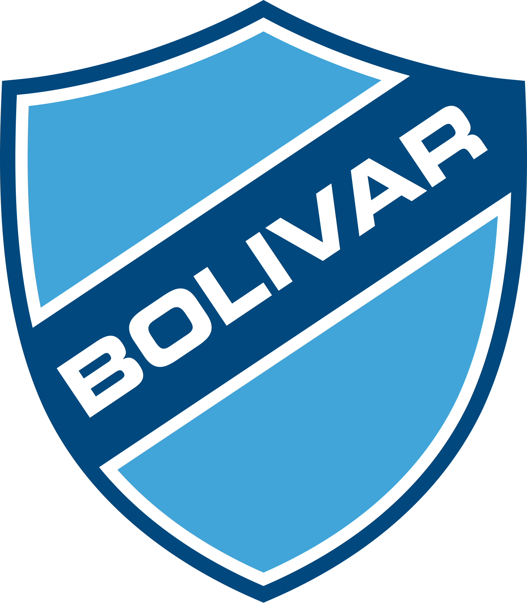
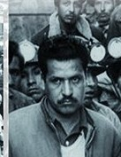
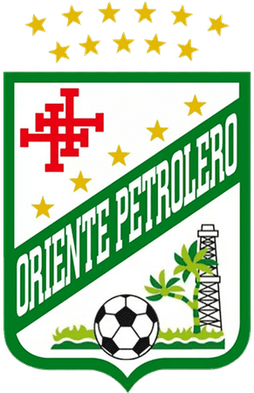
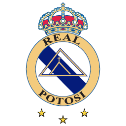
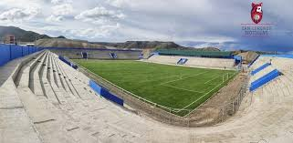
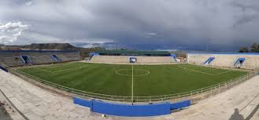
 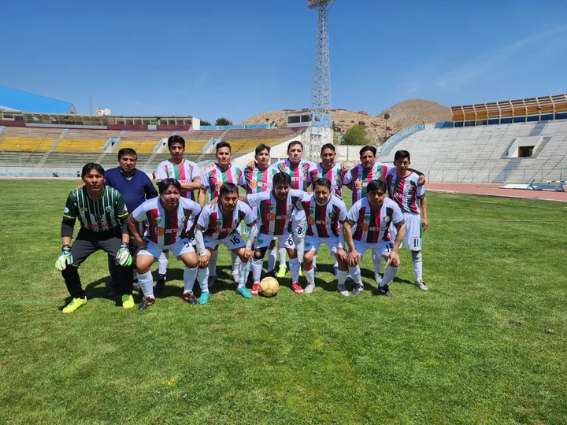
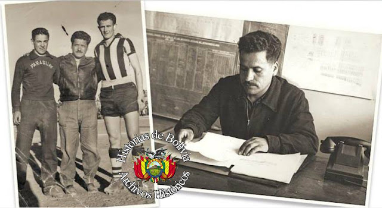
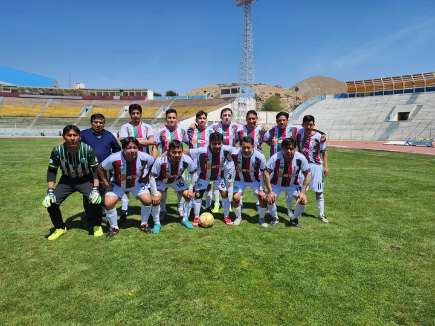
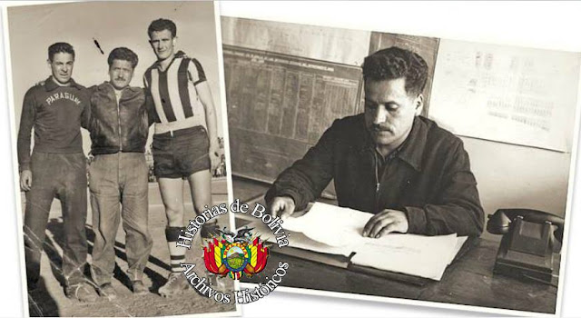
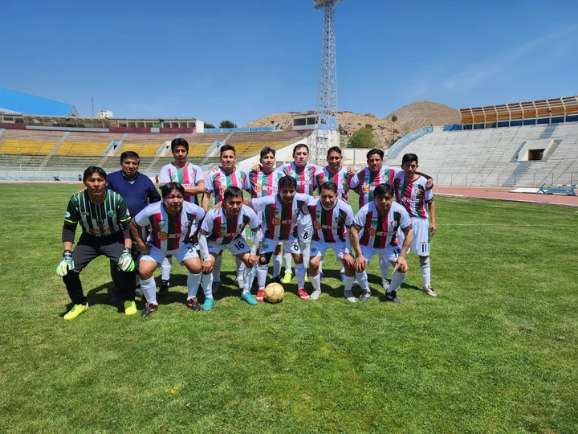
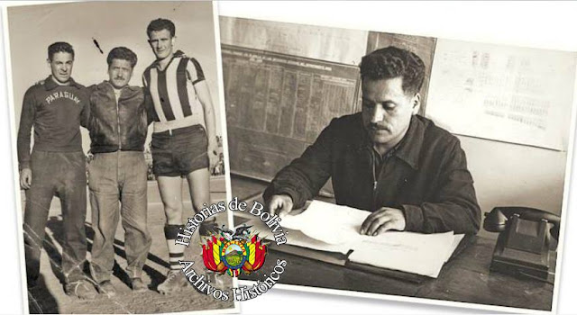
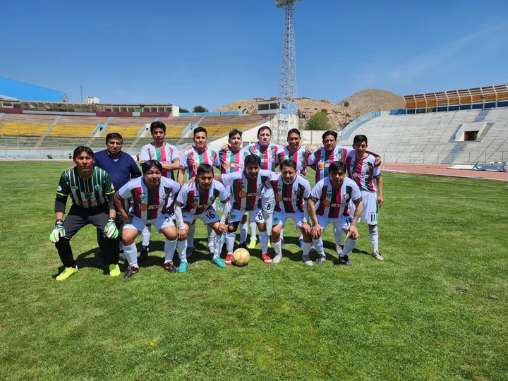
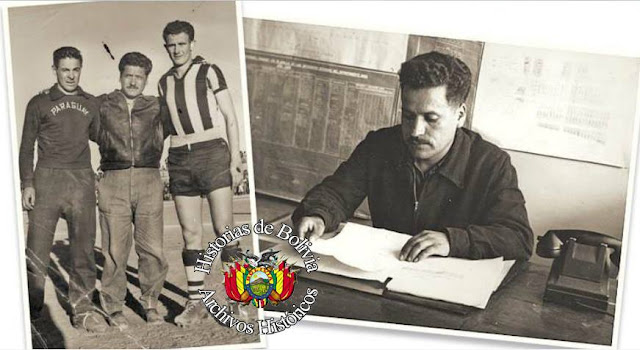
Ubicación: Llallagua, Potosí
Inauguración: 25 de noviembre de 2022
Capacidad: 17.000 espectadores
Inversión: Bs 30 millones
Inicio de obra: 22 de diciembre de 2017
Nombrado en honor a Irineo Pimentel Rojas, dirigente minero histórico.
El estadio fomenta el desarrollo de futbolistas locales y clubes.
Obra paralizada durante gobierno de Jeanine Áñez y retomada en gestión de Arce.
Se entrega en el marco de la gesta libertaria del 10 de noviembre de 1810 de Potosí.
La ejecución se realizó con la participación de la comunidad y autoridades locales.
Profesión: Dirigente minero y líder sindical
Origen: Llallagua, Potosí, Bolivia
Trayectoria: Participó activamente en la defensa de los derechos de los trabajadores mineros y en la organización de cooperativas locales.
Contribuciones: Reconocido por su liderazgo en la mejora de condiciones laborales y en la promoción del deporte y la cultura en su comunidad.
Legado: Su nombre fue dado al estadio de Llallagua en reconocimiento a su labor histórica en el ámbito minero y social.
Datos históricos: Figura clave en la historia local, inspirando nuevas generaciones en liderazgo y compromiso comunitario.